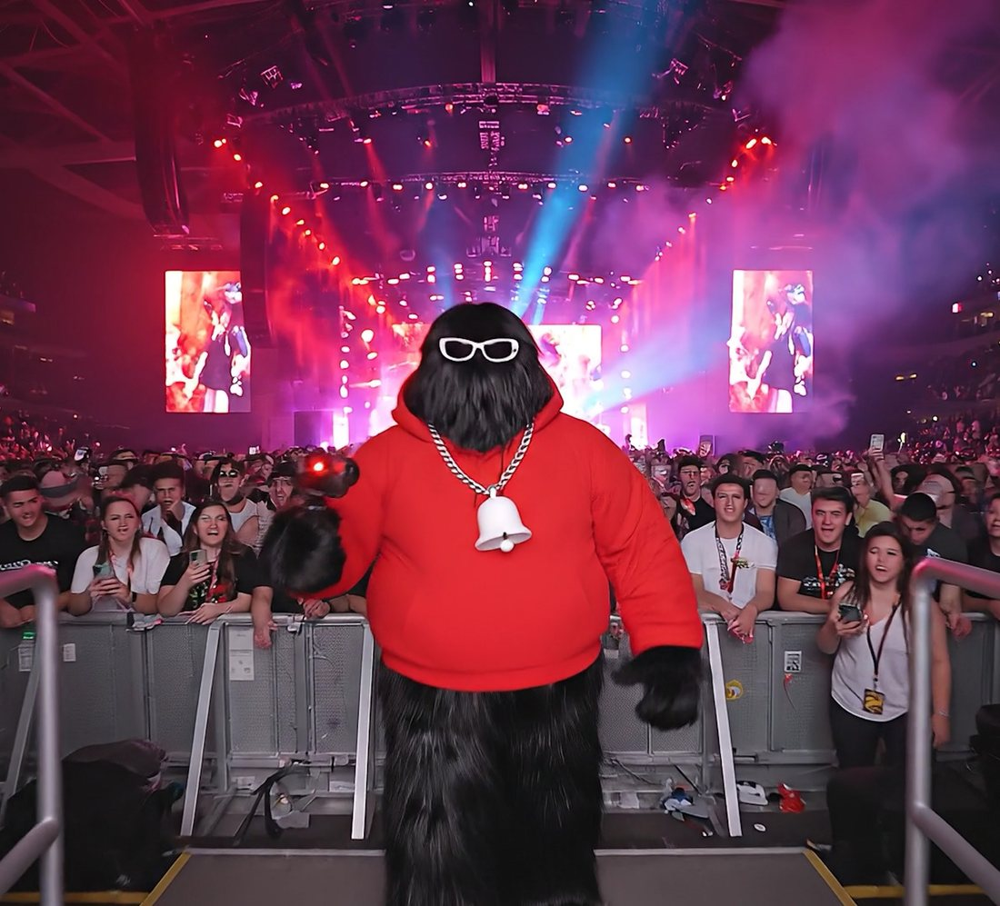
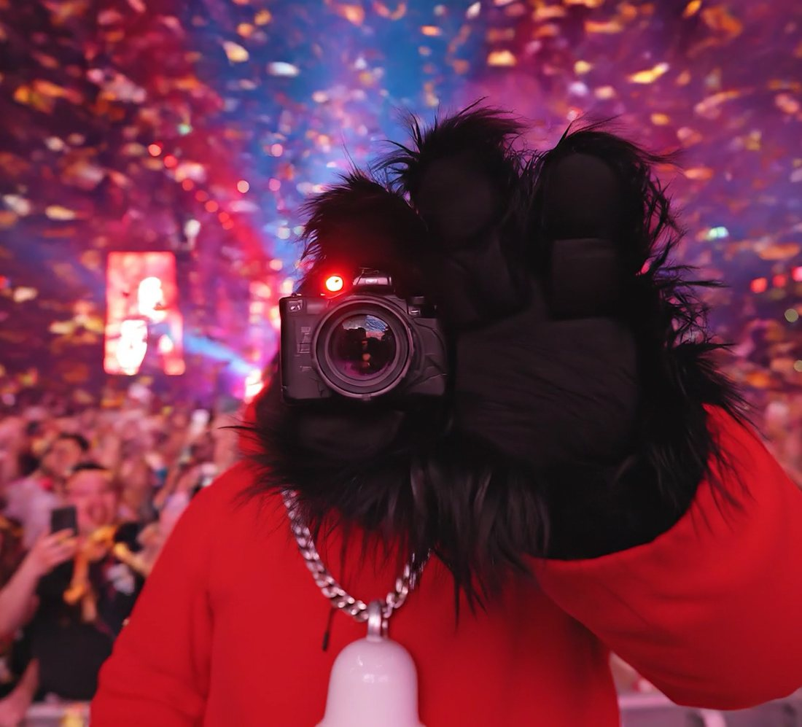

Personajul
YUTUBAU
Un Bau Bau care trăiește în fața camerei. Vlogger inspirat de YouTube, creat pentru cardurile de colecție Electric Spring. Fața rămâne ascunsă în blană, așa că oricine poate fi el.

Fișa personajului · față · profil · spate · detalii
- Nume
- YUTUBAU
- Rol
- Vlogger
- Ținută
- Hanorac roșu #FF0000
- Accesoriu
- Pandantiv clopoțel
- Mereu cu
- Camera pe REC
- Festival
- Electric Spring
Proces
Ce am folosit

Adobe Firefly & Nano Banana
Personajul, fișa în toate unghiurile, generarea clipului.

Adobe Illustrator
Decupajul, rama comună și textul cardului.

Adobe Premiere Pro
Montarea clipului cu rama comună.

Claude
Formularea și rafinarea prompturilor.
Clipul
Cadre din clip
YUTUBAU în mulțime, cu camera pe REC, în fața scenei.


